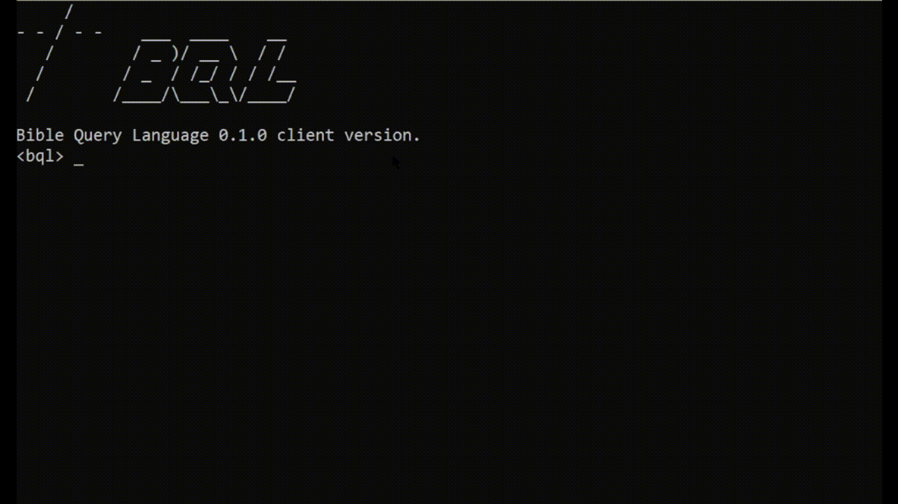

Bible Query Language
Herramienta de consultas bíblicas en línea de comandos
Introducción y funcionamiento
La Biblia es un conjunto de 66 libros ordenados por nombre, capítulo y versículo. El estándar de citación empleado a lo largo de la historia por los estudiosos responde a la necesidad de referenciar de forma concisa y efectiva los textos bíblicos.
Con frecuencia, los documentos académicos citan largas listas de versículos tediosas de consultar manualmente. Por ejemplo, la siguiente es una lista de versículos de la Biblia de Estudio John MacArthur:
Mt 7:15; Hch 20:29, Ga 2:4-5; 1 Ti 4:1-3; 2 P 2:1,20; 1 Jn 2:18-23; 2 Co 11:13-15;
Bible Query Language (BQL) es el software que subsanará este problema, permitiendo realizar consultas de listas en el formato estándar y retornarlas en una forma legible.
Versiones
BQL prealpha-0.1.1
- Mejoras generales en la implementación de la interfaz temporal de comandos.
- Ahora los XML de las biblias se deberán encontrar en la carpeta 'bqlbibles'.
- Se informara del tiempo de procesamiento entre consultas.
- Agregado comando SELECT CONFIGURATION que visualiza la configuración actual.
- Agregada notificación de errores al usuario: error de formato y libro no reconocido.
- Solucionado error que no mostraba versículos en citas de capítulos múltiples.
- Solucionado error de cierre al reconocer sentencia vacía.
BQL prealpha-0.1.0
- Interfaz temporal de comandos incompleta, dotada de funciones sencillas.
- SET VERSION = version.xml -> Selección de versión.
- SET ENABLE_VERSES = true / false -> Ver versículos: sí/no
- SET LINE_SPACING = n -> Espaciado de línea.
- SELECT configurations; -> Ver configuraciones
- QUOTE (versiculo) -> Citar versículo.
- Compatible con modelos XML "Zefania" que deben introducirse en la carpeta raíz.
- Consultas solo en un formato:
- Libro capitulo (Mt 5)
- Libro capitulo:versiculo (Mt 5:3)
- Libro capitulo:versiculo-versiculo (Mt 5:3-6)
- Libro capitulo:versiculo-capitulo:versiculo (Mt 5:3-6:12)
- Libro capitulo-capitulo (Mt 5-6)
- Libro versiculo, si se trata de un libro con un solo versículo (Jud 5)
Repositorio y descarga
Puedes ver y descargar el repositorio en esta página de GitHub.